PhySpeTree Tutorial
Automatically reconstruct Tree of Life
The Tree of Life always used to describe the relations between organisms are living and extinct. Here we reconstruct tree of life, which contain 190 organisms. We use two method automatically reconstruct phylogenetic tree. One way is use highly conserved protein method and another is use SSU rRNA method to reconstruct Tree of Life.
Auto build Tree of life by highly conserved protein method
- Concept
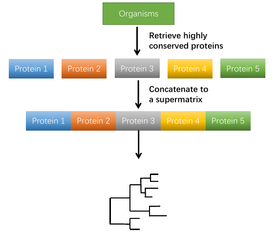
In highly conserved protein (hcp) method automatically build phylogenetic tree by concatenate highly conserved protein to a supermatrix then build tree. Here we prepare 31 highly conserved proteins to automatically reconstruct phylogenetic tree. you also can searching what's the 31 highly protein be used.
1.Prepare species names list
Preparing the organisms names (abbreviated names) are same with KEGG organisms abbreviation. you can get KEGG organisms abbreviation form KEGG API. Here we reconstructed tree of life use 191 organisms names are download. the organisms names list as follow:
$ cat 191speciesnames.txt
neq
pai
ape
sto
ssoa
tvo
tac
afu
.....
2.Reconstruct phylogenetic tree by highly conserved protein method
When users use PhySpeTree automatically build phylogenetic tree, the users can use --hcp arguments to specify use highly conserved protein method to build tree. The default use 1 thread
to reconstruct phylogenetic tree. If you want to use more threads can use -t parameter to set the threads to be used. Here we used the default value 1 thread to
build 191 species phylogenetic tree.
$ PhySpeTree autobuild -i 191speciesnames.txt -o 191_pro --hcp
Loading organisms names success.....
The result are store in:191_pro
Now loading data and constructing species phylogenetic tree......
2016-09-06 13:01:53,462 Checking organisms INFO: The organism: ges
2016-09-06 13:01:53,462 Checking organisms WARNING: There organisms can't match in KEGG database so removed and reconstruct phylogenetic tree
2016-09-06 13:01:53,462 kegg DB INFO: Read organisms names success
2016-09-06 13:02:15,058 kegg DB INFO: Retrieve highly conserved protein 'Ribosomal protein L1' success and store in p1.fasta file
2016-09-06 13:02:37,771 kegg DB INFO: Retrieve highly conserved protein 'Leucyl-tRNA synthetase' success and store in p2.fasta file
2016-09-06 13:03:00,211 kegg DB INFO: Retrieve highly conserved protein 'Ribosomal protein L14' success and store in p3.fasta file
2016-09-06 13:03:20,662 kegg DB INFO: Retrieve highly conserved protein 'Ribosomal protein L5' success and store in p4.fasta file
2016-09-06 13:03:40,959 kegg DB INFO: Retrieve highly conserved protein 'Ribosomal protein S7' success and store in p5.fasta file
2016-09-06 13:04:01,849 kegg DB INFO: Retrieve highly conserved protein 'Ribosomal protein S8' success and store in p6.fasta file
2016-09-06 13:04:24,221 kegg DB INFO: Retrieve highly conserved protein 'Arginyl-tRNA synthetase' success and store in p7.fasta file
2016-09-06 13:04:24,222 kegg DB INFO: retrieve from Kegg DB 7 highly conserved proteins
3.Get the tree file
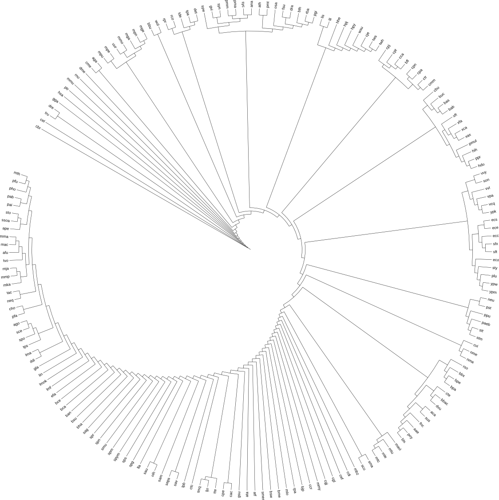
4.Use iview module annotating tree
PhySpeTree provide iview module to annotating tree by iTol, iTol is a very popular online tool for the display, annotation and management of phylogenetic trees. When you use iview module to annotating tree, only drop the output the generate files to your iTol account to display tree.
- Change abbreviated label names to full names use
--labelsarguments.
$ PhySpeTree iview -i 191speciesnames.txt --labels
Change abbreviation names to full names complete
change labels file was save in iview/labels.txt
$ cd iview
$ cat labels.txt
LABELS
SEPARATOR TAB
DATA
neq Nanoarchaeum equitans
pai Pyrobaculum aerophilum
ape Aeropyrum pernix
sto Sulfolobus tokodaii
ssoa Sulfolobus solfataricus SULA
tvo Thermoplasma volcanium
tac Thermoplasma acidophilum
afu Archaeoglobus fulgidus DSM 4304
hal Halobacterium sp. NRC-1
mac Methanosarcina acetivorans
mma Methanosarcina mazei Go1
pfu Pyrococcus furiosus DSM 3638
pho Pyrococcus horikoshii
pab Pyrococcus abyssi
mth Methanothermobacter thermautotrophicus
mka Methanopyrus kandleri
mmp Methanococcus maripaludis S2
.....
- Drop
labels.txtto you iTol account and view the phylogenetic tree.
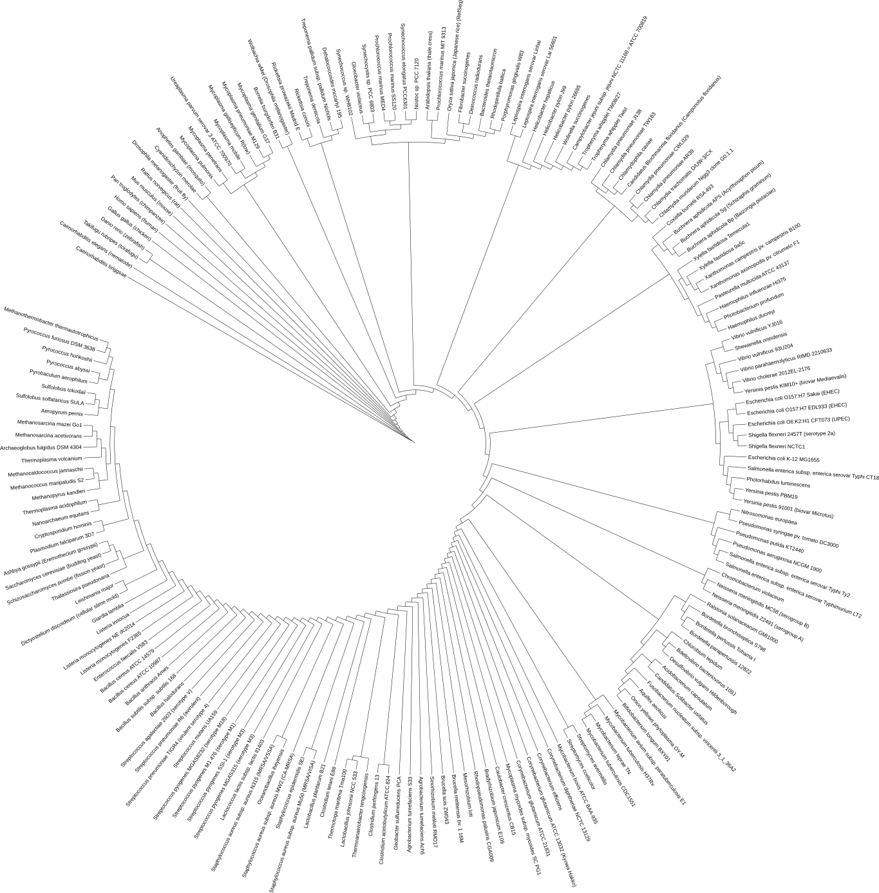
- Color range by phylum use
-aparameter to specified. The default annotation by phylum.
$ PhySpeTree iview -i 191speciesnames.txt -o iview --range -a phylum
Color range by phylum was complete.
Color range annotation was save in iview/range_color_by_phylum.txt
$ cd iview
$ cat range_color_by_phylum.txt
TREE_COLORS
SEPARATOR TAB
DATA
neq range #996433 Archaea
pai range #996433 Archaea
ape range #996433 Archaea
sto range #996433 Archaea
ssoa range #996433 Archaea
tvo range #996433 Archaea
tac range #996433 Archaea
afu range #996433 Archaea
hal range #996433 Archaea
mac range #996433 Archaea
mma range #996433 Archaea
pfu range #996433 Archaea
pho range #996433 Archaea
pab range #996433 Archaea
mth range #996433 Archaea
mka range #996433 Archaea
mmp range #996433 Archaea
mja range #996433 Archaea
.....
- Drop
range_color_by_phylum.txtto you iTol account and view the phylogenetic tree.
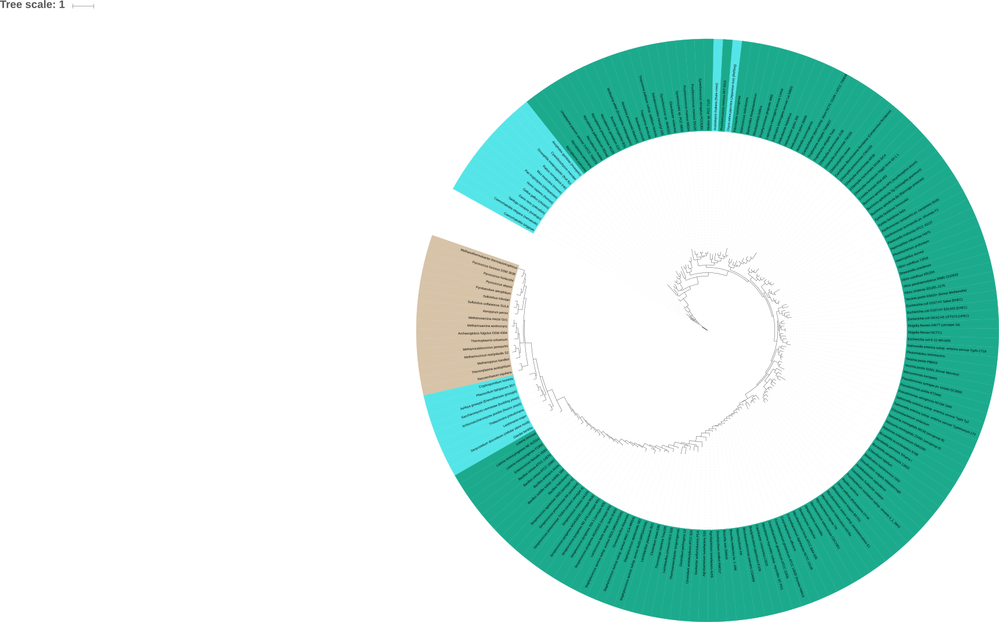
Auto build Tree of Life by 16s SSU RNA
- Concept

PhySpeTree provide auto reconstruct phylogenetic tree by 16s SSU RNA, the concept of this way is use alignment organisms 16s SSU RNA and then reconstruct phylogenetic tree.
1.Prepare organism names list, 191 organisms names list download
$ cat 191speciesnames.txt
neq
pai
ape
sto
ssoa
tvo
tac
afu
.....
2.Reconstruct phylogenetic tree by 16s SSU RNA method
$ PhySpeTree autobuild -i 191speciesnames.txt -o 191_rna --srna
Loading organisms names success.....
The result are store in:191_rna
Now loading data and constructing species phylogenetic tree......
2016-09-05 19:48:03,824 Checking organisms INFO: The organism: neq
2016-09-05 19:48:03,824 Checking organisms INFO: The organism: ape
2016-09-05 19:48:03,824 Checking organisms INFO: The organism: tac
2016-09-05 19:48:03,824 Checking organisms INFO: The organism: mmp
2016-09-05 19:48:03,824 Checking organisms INFO: The organism: gla
2016-09-05 19:48:03,824 Checking organisms INFO: The organism: tps
2016-09-05 19:48:03,824 Checking organisms INFO: The organism: cho
2016-09-05 19:48:03,824 Checking organisms INFO: The organism: ddi
2016-09-05 19:48:03,824 Checking organisms INFO: The organism: spo
2016-09-05 19:48:03,824 Checking organisms INFO: The organism: aga
2016-09-05 19:48:03,824 Checking organisms INFO: The organism: tru
2016-09-05 19:48:03,824 Checking organisms INFO: The organism: mpu
2016-09-05 19:48:03,824 Checking organisms INFO: The organism: lin
2016-09-05 19:48:03,825 Checking organisms INFO: The organism: ban
2016-09-05 19:48:03,825 Checking organisms INFO: The organism: bce
2016-09-05 19:48:03,825 Checking organisms INFO: The organism: ljo
2016-09-05 19:48:03,825 Checking organisms INFO: The organism: san
2016-09-05 19:48:03,825 Checking organisms INFO: The organism: spg
2016-09-05 19:48:03,825 Checking organisms INFO: The organism: ges
2016-09-05 19:48:03,825 Checking organisms INFO: The organism: lis
2016-09-05 19:48:03,825 Checking organisms INFO: The organism: sco
2016-09-05 19:48:03,825 Checking organisms INFO: The organism: cdi
2016-09-05 19:48:03,825 Checking organisms INFO: The organism: mle
2016-09-05 19:48:03,825 Checking organisms INFO: The organism: wsu
2016-09-05 19:48:03,825 Checking organisms INFO: The organism: rpr
2016-09-05 19:48:03,825 Checking organisms INFO: The organism: bpe
2016-09-05 19:48:03,825 Checking organisms INFO: The organism: bpa
2016-09-05 19:48:03,825 Checking organisms INFO: The organism: ppr
2016-09-05 19:48:03,825 Checking organisms WARNING: There organisms can't match in SILVA database so removed and reconstruct phylogenetic tree
2016-09-05 19:48:03,825 16s DB INFO: Read organisms names success
2016-09-05 19:48:14,354 16s DB INFO: Retrieve organism 'pai' 16s SSU RNA sequences data success
2016-09-05 19:48:17,703 16s DB INFO: Retrieve organism 'sto' 16s SSU RNA sequences data success
2016-09-05 19:48:20,674 16s DB INFO: Retrieve organism 'ssoa' 16s SSU RNA sequences data success
2016-09-05 19:48:23,031 16s DB INFO: Retrieve organism 'tvo' 16s SSU RNA sequences data success
2016-09-05 19:48:26,510 16s DB INFO: Retrieve organism 'afu' 16s SSU RNA sequences data success
2016-09-05 19:48:28,766 16s DB INFO: Retrieve organism 'hal' 16s SSU RNA sequences data success
2016-09-05 19:48:31,148 16s DB INFO: Retrieve organism 'mac' 16s SSU RNA sequences data success
2016-09-05 19:48:33,579 16s DB INFO: Retrieve organism 'mma' 16s SSU RNA sequences data success
2016-09-05 19:48:35,856 16s DB INFO: Retrieve organism 'pfu' 16s SSU RNA sequences data success
2016-09-05 19:48:38,194 16s DB INFO: Retrieve organism 'pho' 16s SSU RNA sequences data success
......
3.Get the tree file
4.Use iview annotating tree
- Change abbreviated label names to full names use
--labels
$ PhySpeTree iview -i 191speciesnames.txt --labels
Change abbreviation names to full names complete
change labels file was save in iview/labels.txt
$ cd iview
$ cat labels.txt
LABELS
SEPARATOR TAB
DATA
neq Nanoarchaeum equitans
pai Pyrobaculum aerophilum
ape Aeropyrum pernix
sto Sulfolobus tokodaii
ssoa Sulfolobus solfataricus SULA
tvo Thermoplasma volcanium
tac Thermoplasma acidophilum
afu Archaeoglobus fulgidus DSM 4304
hal Halobacterium sp. NRC-1
mac Methanosarcina acetivorans
mma Methanosarcina mazei Go1
pfu Pyrococcus furiosus DSM 3638
pho Pyrococcus horikoshii
pab Pyrococcus abyssi
mth Methanothermobacter thermautotrophicus
mka Methanopyrus kandleri
mmp Methanococcus maripaludis S2
.....
- Tree view in iTol
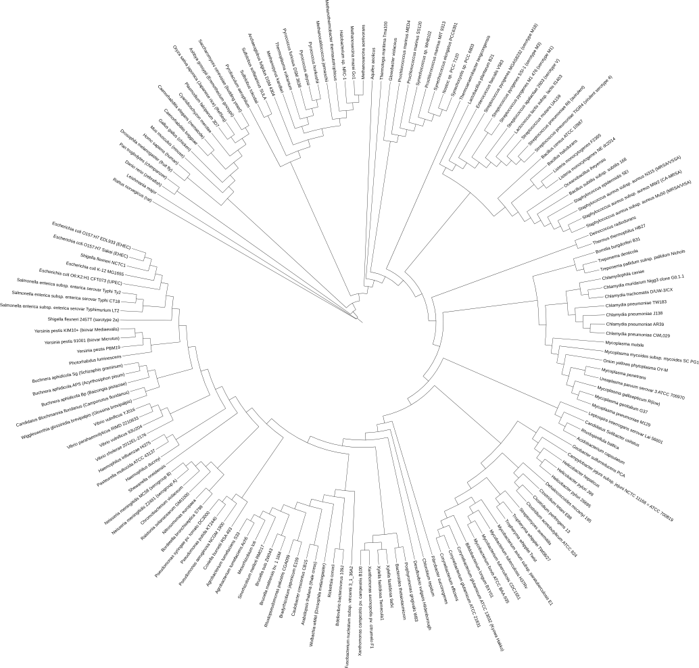
- Color range by phylum
$ PhySpeTree iview -i 191speciesnames.txt -o iview --range -a phylum
Color range by phylum was complete.
Color range annotation was save in iview/range_color_by_phylum.txt
$ cd iview
$ cat range_color_by_phylum.txt
TREE_COLORS
SEPARATOR TAB
DATA
neq range #996433 Archaea
pai range #996433 Archaea
ape range #996433 Archaea
sto range #996433 Archaea
ssoa range #996433 Archaea
tvo range #996433 Archaea
tac range #996433 Archaea
afu range #996433 Archaea
hal range #996433 Archaea
mac range #996433 Archaea
mma range #996433 Archaea
pfu range #996433 Archaea
pho range #996433 Archaea
pab range #996433 Archaea
mth range #996433 Archaea
mka range #996433 Archaea
mmp range #996433 Archaea
mja range #996433 Archaea
.....
- Tree view in iTol

- Color range by class
$ PhySpeTree iview -i 191speciesnames.txt --range -a class
Color range by class was complete.
Color range annotation was save in iview/range_color_by_class.txt
$ cd iview
$ cat range_color_by_class.txt
TREE_COLORS
SEPARATOR TAB
DATA
neq range #4A959E Nanoarchaeota
pai range #58CD80 Crenarchaeota
ape range #58CD80 Crenarchaeota
sto range #58CD80 Crenarchaeota
ssoa range #58CD80 Crenarchaeota
tvo range #639BB0 Euryarchaeota
tac range #639BB0 Euryarchaeota
afu range #639BB0 Euryarchaeota
hal range #639BB0 Euryarchaeota
mac range #639BB0 Euryarchaeota
mma range #639BB0 Euryarchaeota
pfu range #639BB0 Euryarchaeota
pho range #639BB0 Euryarchaeota
pab range #639BB0 Euryarchaeota
mth range #639BB0 Euryarchaeota
mka range #639BB0 Euryarchaeota
mmp range #639BB0 Euryarchaeota
mja range #639BB0 Euryarchaeota
gla range #C5D49E Diplomonads
lma range #899DDB Euglenozoa
tps range #7DD2ED Stramenopiles
cho range #99A01A Alveolates
.....
- Tree view in iTol
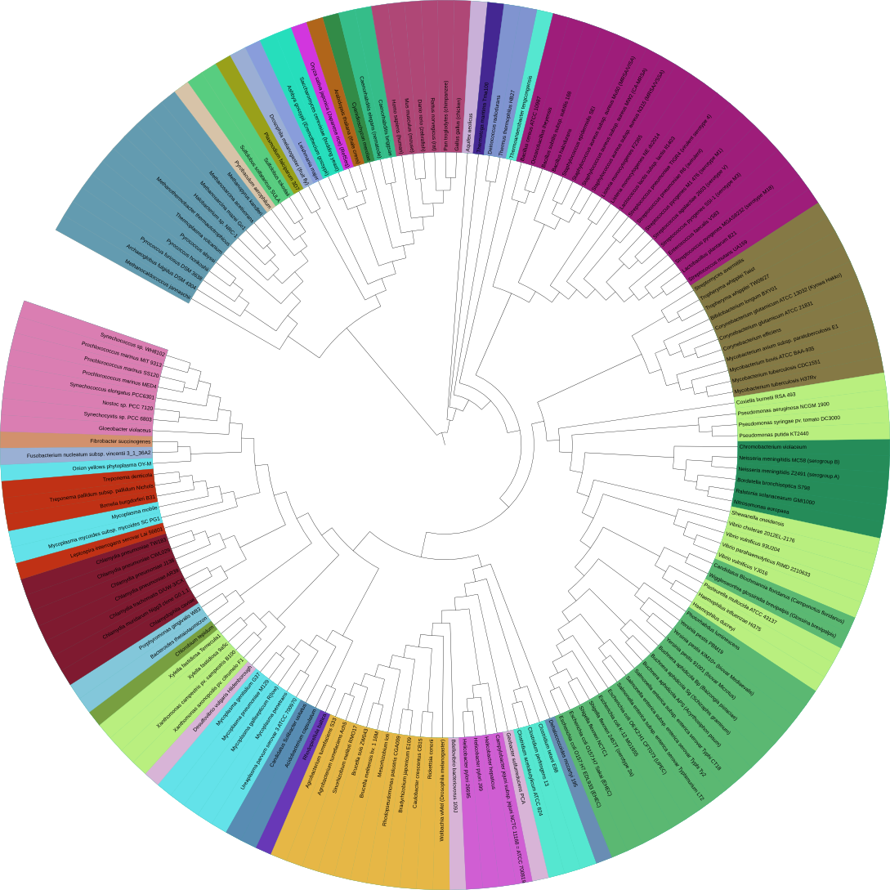
Auto build a plant tree
1.Prepare organisms names list
Here we automatically reconstructed 52 plants phylogenetic tree by PhySpeTree use highly conserved protein method. The species list download.
$ cat 52plantsnames.txt
aly
ath
atr
bdi
bpg
brp
bvg
cam
ccp
cic
cit
cme
cmo
.....
2.Reconstruct phylogenetic tree by highly conserved protein method
$ PhySpeTree autobuild -i 52plantsnames.txt -o 52plant_pro --srna -t 6
Loading organisms names success.....
The result are store in:52plant_pro
Now loading data and constructing species phylogenetic tree......
Wed, 07 Sep 2016 18:48:35 kegg DB[line:105] INFO Read organisms names success
Wed, 07 Sep 2016 18:48:44 kegg DB[line:92] INFO Retrieve highly conserved protein 'Leucyl-tRNA synthetase' success and store in p1.fasta file
Wed, 07 Sep 2016 18:48:53 kegg DB[line:92] INFO Retrieve highly conserved protein 'Metal-dependent proteases with chaperone activity' success and store in p2.fasta file
Wed, 07 Sep 2016 18:49:01 kegg DB[line:92] INFO Retrieve highly conserved protein 'Phenylalanine-tRNA synthethase alpha subunit' success and store in p3.fasta file
Wed, 07 Sep 2016 18:49:10 kegg DB[line:92] INFO Retrieve highly conserved protein 'Preprotein translocase subunit SecY' success and store in p4.fasta file
Wed, 07 Sep 2016 18:49:17 kegg DB[line:92] INFO Retrieve highly conserved protein 'Ribosomal protein L11' success and store in p5.fasta file
Wed, 07 Sep 2016 18:49:25 kegg DB[line:92] INFO Retrieve highly conserved protein 'Ribosomal protein L13' success and store in p6.fasta file
Wed, 07 Sep 2016 18:49:32 kegg DB[line:92] INFO Retrieve highly conserved protein 'Ribosomal protein L15' success and store in p7.fasta file
Wed, 07 Sep 2016 18:49:40 kegg DB[line:92] INFO Retrieve highly conserved protein 'Ribosomal protein L16/L10E' success and store in p8.fasta file
Wed, 07 Sep 2016 18:49:48 kegg DB[line:92] INFO Retrieve highly conserved protein 'Ribosomal protein L18' success and store in p9.fasta file
Wed, 07 Sep 2016 18:50:01 kegg DB[line:92] INFO Retrieve highly conserved protein 'Ribosomal protein L22' success and store in p10.fasta file
Wed, 07 Sep 2016 18:50:08 kegg DB[line:92] INFO Retrieve highly conserved protein 'Ribosomal protein L3' success and store in p11.fasta file
Wed, 07 Sep 2016 18:50:16 kegg DB[line:92] INFO Retrieve highly conserved protein 'Ribosomal protein L5' success and store in p12.fasta file
Wed, 07 Sep 2016 18:50:24 kegg DB[line:92] INFO Retrieve highly conserved protein 'Ribosomal protein L6P/L9E' success and store in p13.fasta file
Wed, 07 Sep 2016 18:50:31 kegg DB[line:92] INFO Retrieve highly conserved protein 'Ribosomal protein S11' success and store in p14.fasta file
Wed, 07 Sep 2016 18:50:40 kegg DB[line:92] INFO Retrieve highly conserved protein 'Ribosomal protein S17' success and store in p15.fasta file
Wed, 07 Sep 2016 18:50:48 kegg DB[line:92] INFO Retrieve highly conserved protein 'Ribosomal protein S2' success and store in p16.fasta file
Wed, 07 Sep 2016 18:50:56 kegg DB[line:92] INFO Retrieve highly conserved protein 'Ribosomal protein S4' success and store in p17.fasta file
Wed, 07 Sep 2016 18:51:04 kegg DB[line:92] INFO Retrieve highly conserved protein 'Ribosomal protein S5' success and store in p18.fasta file
Wed, 07 Sep 2016 18:51:11 kegg DB[line:92] INFO Retrieve highly conserved protein 'Ribosomal protein S8' success and store in p19.fasta file
Wed, 07 Sep 2016 18:51:25 kegg DB[line:92] INFO Retrieve highly conserved protein 'Seryl-tRNA synthetase' success and store in p20.fasta file
Wed, 07 Sep 2016 18:51:39 kegg DB[line:92] INFO Retrieve highly conserved protein 'Ribosomal protein S13' success and store in p21.fasta file
Wed, 07 Sep 2016 18:51:39 kegg DB[line:94] INFO retrieve from Kegg DB 21 highly conserved proteins
......
3.Get tree file
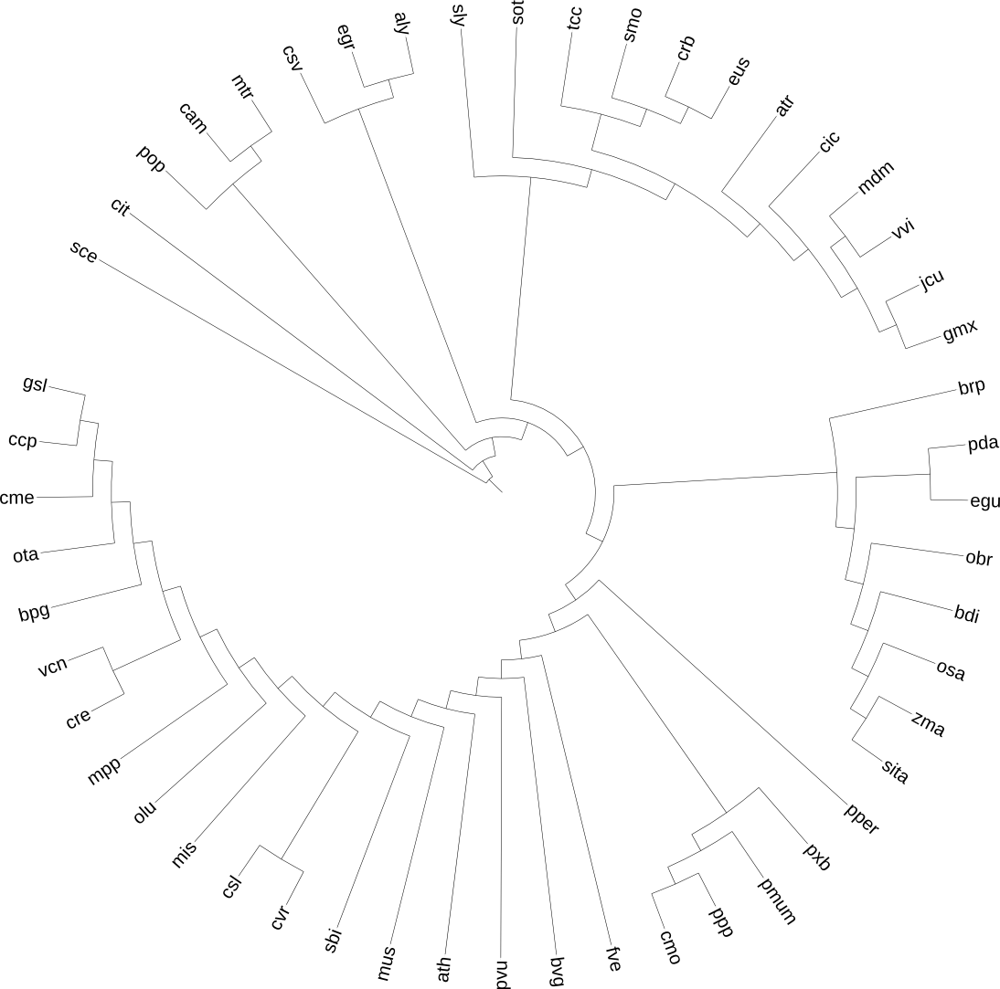
4.Use iview annotating tree
- Change label names use
--labels
$ PhySpeTree iview -i 52plantsnames.txt --labels
Change abbreviation names to full names complete
change labels file was save in iview/labels.txt
$ cd iview
$ cat labels.txt
LABELS
SEPARATOR TAB
DATA
aly Arabidopsis lyrata (lyrate rockcress)
ath Arabidopsis thaliana (thale cress)
atr Amborella trichopoda
bdi Brachypodium distachyon
bpg Bathycoccus prasinos
brp Brassica rapa (field mustard)
bvg Beta vulgaris (sugar beet)
cam Cicer arietinum (chickpea)
ccp Chondrus crispus (carragheen)
cic Citrus clementina (mandarin orange)
cit Citrus sinensis (Valencia orange)
cme Cyanidioschyzon merolae
cmo Cucumis melo (muskmelon)
crb Capsella rubella
cre Chlamydomonas reinhardtii
csl Coccomyxa subellipsoidea
csv Cucumis sativus (cucumber)
cvr Chlorella variabilis
.....
- Tree view by iTol
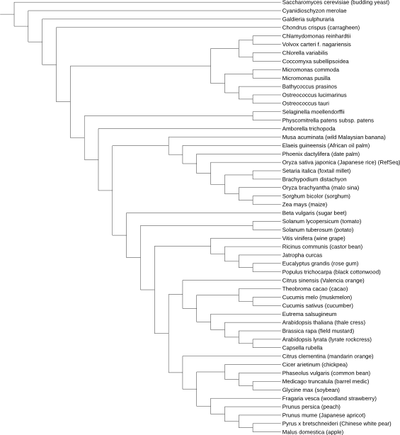
- Color range by class
$ PhySpeTree iview -i 52plantsnames.txt -o iview --range -a phylum
Color range by class was complete.
Color range annotation was save in iview/range_color_by_class.txt
$ cd iview
$ cat range_color_by_class.txt
TREE_COLORS
SEPARATOR TAB
DATA
aly range #1C748D Eudicots
ath range #1C748D Eudicots
atr range #C4DE94 Basal Magnoliophyta
bdi range #854B9F Monocots
bpg range #784CE5 Green algae
brp range #1C748D Eudicots
bvg range #1C748D Eudicots
cam range #1C748D Eudicots
ccp range #CEDDB3 Red algae
cic range #1C748D Eudicots
cit range #1C748D Eudicots
cme range #CEDDB3 Red algae
cmo range #1C748D Eudicots
crb range #1C748D Eudicots
cre range #784CE5 Green algae
csl range #784CE5 Green algae
.....
- Tree view use iview module by iTol
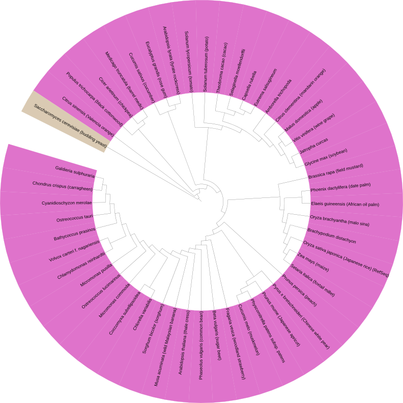
Extend tree with a new organism
Some time we want to extend tree with a new organisms, use PhySpeTree user can easy do it.
Extend tree by 16s SSU rRNA method
- Concept
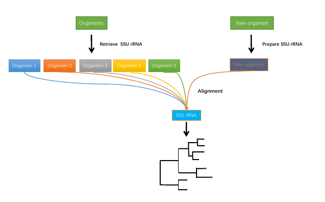
Here we extend tree of life with a new organism Lokiarchaeum sp. GC14_75 (loki).
1.Prepare new organism SSU rRNA sequence
When use SSU rRNA method to extend a new organism user need prepare the new organism SSU rRNA sequence, Here we prepared the new organism Lokiarchaeum sp. GC14_75 (loki)
16s rRNA sequence save with FASTA format. example download extend_rna_olki.fasta
$ cat extend_rna_olki.fasta
>loki
GAGAUGGGUACUGAGACAACGACCCAGGCCUUACGAGGCGCAGCAGGCGCGAAACCUCCGCAAUACACGAAAGUGUGACG
GGGUUACCCAAAGUGUUCAAUUAUGAACUGUGGUAGGUGAGUAAUGUUCCCUACUAGAAAGGAGAGGGCAAGGCUGGUGC
CAGCCGCCGCGGUAAAACCAGCUCUUCAAGUGGUCGGGAUAAUUAUUGGGCUUAAAGUGUCCGUAGCCGGUUUAGUAAGU
UCCUGGUAAAAUCGGGUAGCUUAACUAUCUGUAUGCUAGGAAUACUGCUAUACUAGAGGACGGGAGAGGUCUGAGGUACU
ACAGGGGUAGGGGUGAAAUCUUAUAAUCCUUGUAGGACCACCAGUGGCGAAGGCGUCAGACUGGAACGUGCCUGACGGUG
AGGGACGAAAGCCAGGGGAGCGAACCGGAUUAGAUACCCGGGUAGUCCUGGCCGUAAACGAUGCAUACUAGGUGAUGGCA
UGGCCAUGAGCCAUGUCAGUGCCGUAGGGAAACCGUUAAGUGUGCCGCCUGGGAAGUACGGUCGCAAGGCUAAAACUUAA
AGGAAUUGGCGGGGGAGCACCACAAGGGGUGAAGCCUGCGGUUCAAUUGGACUCAACGCCGGGAAACUUACCAGGGGAGA
CAGCAGAAUGAUGGUCAGGUUGACGACCUUACCUGACAAGCUGAGAGGAGGUGCAUGGCCGUCGCCAGUUCGUGCUGUGA
GGUAUCCUGUUAAGUCAGGCAACGAACGAGAUCCGCACCUUUAUUUGCCAGCAAGAAGUCACGACUUCGUUGGGAACACU
AAAGGGACCGCCGUCGAUAAGACGGAGGAAGGAGCGGGCAAAGGCAGGUCAGUAUGCCCCGAAACCCCUGGGCUACACGC
GGGCUGCAAUGGUAUGAACAAUGGGCUGUAACUCCGAAAGGAGAAACCAAUCCCGAAAUCAUAUCUCAGUGGGAAUUGUC
GGCUGUAACCCGCCGACAUGAACGUGGAAUCCCUAGUAAUCGUGUGUCAUCAUCGCACGGUGAAUACGUCUCUGCUCCUU
GCACACACCGCCCGUCGCUCCAUCCGAGUGUGCUAAAAAUGAGGUAUGGUCAGUCUGGUCGUAUCGAAUUUCUAGUAUGC
GAGGGGGGAGAAGUCGUAACAAGGUAGCCGUAGGGGAACCUGCGGCUGGAUCACCUCCU
2.Reconstruct phylogenetic tree by SSU rRNA extend with a new organism
Reconstruct phylogenetic tree by SSU rRNA method, you should use --esrna to specify the method and use -e parameter specify
the extend organism SSU rRNA sequence file.
$ PhySpeTree autobuild -i 191speciesnames.txt -o extend_rna -e extend_rna_loki.fasta --esrna -t 6
Loading organisms names success.....
The result are store in:extend_rna
Now loading data and constructing species phylogenetic tree......
2016-09-08 14:49:15,423 Checking organisms INFO: The organism: neq
2016-09-08 14:49:15,424 Checking organisms INFO: The organism: ape
2016-09-08 14:49:15,424 Checking organisms INFO: The organism: tac
2016-09-08 14:49:15,424 Checking organisms INFO: The organism: mmp
2016-09-08 14:49:15,424 Checking organisms INFO: The organism: gla
2016-09-08 14:49:15,424 Checking organisms INFO: The organism: tps
2016-09-08 14:49:15,424 Checking organisms INFO: The organism: cho
2016-09-08 14:49:15,424 Checking organisms INFO: The organism: ddi
2016-09-08 14:49:15,424 Checking organisms INFO: The organism: spo
2016-09-08 14:49:15,424 Checking organisms INFO: The organism: aga
2016-09-08 14:49:15,424 Checking organisms INFO: The organism: tru
2016-09-08 14:49:15,424 Checking organisms INFO: The organism: mpu
2016-09-08 14:49:15,425 Checking organisms INFO: The organism: lin
2016-09-08 14:49:15,425 Checking organisms INFO: The organism: ban
2016-09-08 14:49:15,425 Checking organisms INFO: The organism: bce
2016-09-08 14:49:15,425 Checking organisms INFO: The organism: ljo
2016-09-08 14:49:15,425 Checking organisms INFO: The organism: san
2016-09-08 14:49:15,425 Checking organisms INFO: The organism: spg
2016-09-08 14:49:15,425 Checking organisms INFO: The organism: ges
2016-09-08 14:49:15,425 Checking organisms INFO: The organism: lis
2016-09-08 14:49:15,425 Checking organisms INFO: The organism: sco
2016-09-08 14:49:15,425 Checking organisms INFO: The organism: cdi
2016-09-08 14:49:15,425 Checking organisms INFO: The organism: mle
2016-09-08 14:49:15,425 Checking organisms INFO: The organism: wsu
2016-09-08 14:49:15,425 Checking organisms INFO: The organism: rpr
2016-09-08 14:49:15,425 Checking organisms INFO: The organism: bpe
2016-09-08 14:49:15,425 Checking organisms INFO: The organism: bpa
2016-09-08 14:49:15,425 Checking organisms INFO: The organism: ppr
2016-09-08 14:49:15,425 Checking organisms WARNING: There organisms can't match in SILVA database so removed and reconstruct phylogenetic tree
2016-09-08 14:49:15,425 16s DB INFO: Read organisms names success
2016-09-08 14:49:15,499 16s DB INFO: Retrieve organism 'pai' 16s SSU RNA sequences data success
2016-09-08 14:49:15,515 16s DB INFO: Retrieve organism 'sto' 16s SSU RNA sequences data success
2016-09-08 14:49:15,532 16s DB INFO: Retrieve organism 'ssoa' 16s SSU RNA sequences data success
2016-09-08 14:49:15,559 16s DB INFO: Retrieve organism 'tvo' 16s SSU RNA sequences data success
2016-09-08 14:49:15,577 16s DB INFO: Retrieve organism 'afu' 16s SSU RNA sequences data success
.....
3.View tree by iTol
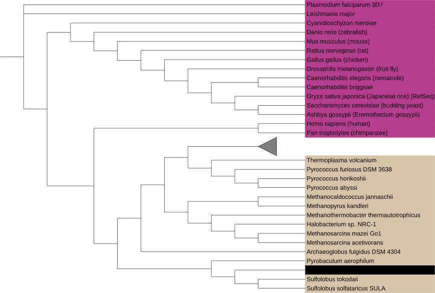
Extend tree by highly conserved protein (hcp) method
- Concept
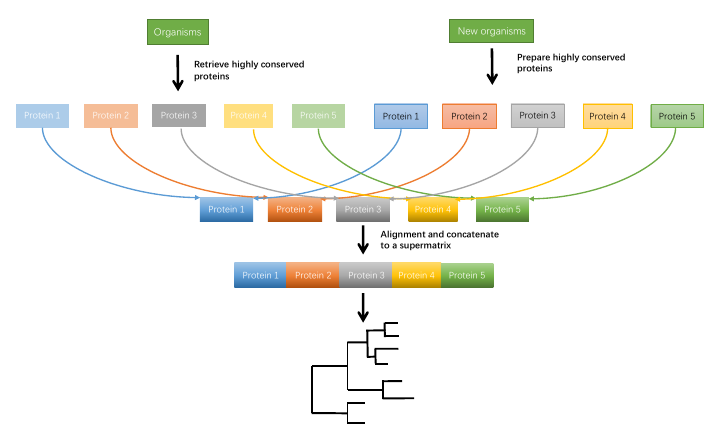
1.Check prepare proteins
When use highly conserved protein method reconstruct phylogenetic tree with new organism, user should use check method to check what
highly conserved protein will be prepared.
$ PhySpeTree check -i 191speciesnames.txt --ehcp
'Ribosomal protein L1' ----------------------------------> p1.fasta
'Leucyl-tRNA synthetase' ----------------------------------> p2.fasta
'Ribosomal protein L14' ----------------------------------> p3.fasta
'Ribosomal protein L5' ----------------------------------> p4.fasta
'Ribosomal protein S7' ----------------------------------> p5.fasta
'Ribosomal protein S8' ----------------------------------> p6.fasta
'Arginyl-tRNA synthetase' ----------------------------------> p7.fasta
Check extend highly conserved protein is completed.
Check result is store in /check/physpe_echp_extend.txt
......
2. Prepare highly conserved proteins
After use check command, we should prepare seven highly conserved protein store this highly conserved protein to p1 ~ p7 FASTA format files.
The highly protein protein names are know with check command. Here we prepare p1 ~ p7 highly conserved proteins to Lokiarchaeum sp. GC14_75 (loki).
Download highly_conserved_protein_loki
$ cd extend_pro_loki
$ ls
p1.fasta p2.fasta p3.fasta p4.fasta p5.fasta p6.fasta p7.fasta
$ cat p1.fasta
>loki
MKVDDNLLKQSLNAAIDFSVRKKEGFKDRVRKFDETIDLIINIKDVNLNDPKNRIDKEII
LTNEIVEEEKLNICVIASGEILLEAKKAGVETLDRDALIKLNNEEKKHKKKFAKKYEFFI
VEDKMMRDVARYLARFLGPLGKMPKPFPTGYGIISSPGDLRTAVERYKKVIRIQMKKQPI
IFAKIGKKSMEIDRLFDNMKTVIDFIADQMPHKFNNFKSMYLKSSMGKPIKVTEEFLKSL
EV
3.Reconstruct phylogenetic tree by highly conserved protein method extend with a new organism
$ PhySpeTree autobuild -i 191speciesnames.txt -o extend_pro_loki -e highly_consrved_protein_loki --ehcp -t 6
Loading organisms names success.....
The result are store in:extend_pro_loki
Now loading data and constructing species phylogenetic tree......
2016-09-08 15:49:46,391 Checking organisms INFO: The organism: ges
2016-09-08 15:49:46,392 Checking organisms WARNING: There organisms can't match in KEGG database so removed and reconstruct phylogenetic tree
2016-09-08 15:49:46,392 kegg DB INFO: Read organisms names success
2016-09-08 15:50:20,604 kegg DB INFO: Retrieve highly conserved protein 'Ribosomal protein L1' success and store in p1.fasta file
2016-09-08 15:50:57,464 kegg DB INFO: Retrieve highly conserved protein 'Leucyl-tRNA synthetase' success and store in p2.fasta file
2016-09-08 15:51:27,257 kegg DB INFO: Retrieve highly conserved protein 'Ribosomal protein L14' success and store in p3.fasta file
2016-09-08 15:51:55,441 kegg DB INFO: Retrieve highly conserved protein 'Ribosomal protein L5' success and store in p4.fasta file
2016-09-08 15:52:28,429 kegg DB INFO: Retrieve highly conserved protein 'Ribosomal protein S7' success and store in p5.fasta file
2016-09-08 15:52:59,551 kegg DB INFO: Retrieve highly conserved protein 'Ribosomal protein S8' success and store in p6.fasta file
2016-09-08 15:53:31,157 kegg DB INFO: Retrieve highly conserved protein 'Arginyl-tRNA synthetase' success and store in p7.fasta file
2016-09-08 15:53:31,158 kegg DB INFO: retrieve from Kegg DB 7 highly conserved proteins
......
4.View tree by iTol
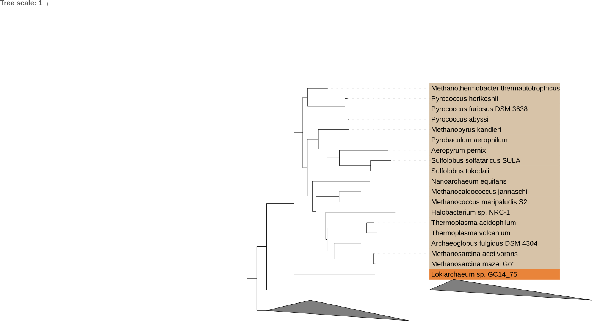